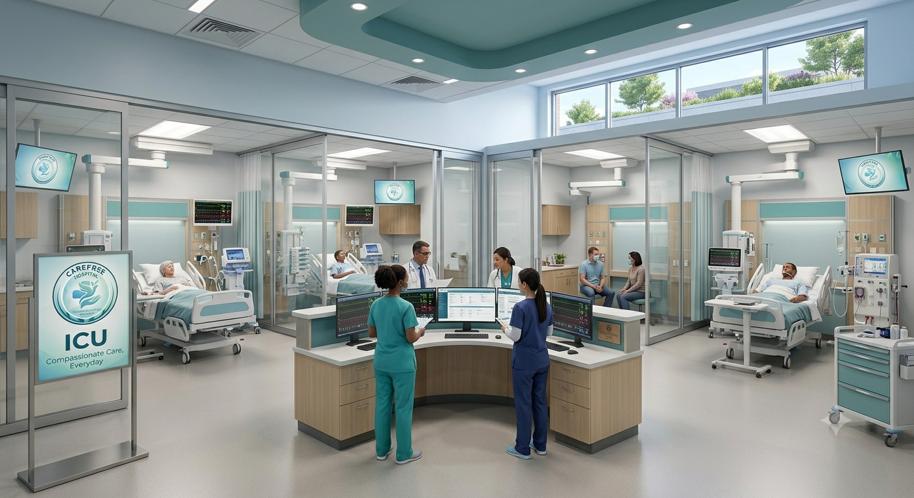
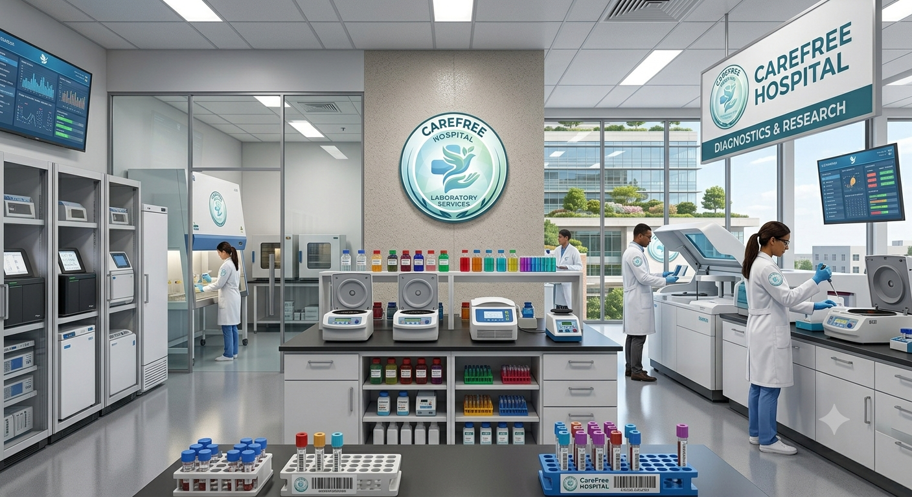

Information of hospital
CareFree Hospital is an imaginary, modern-specialty hospital providing high quality healthcare with compassion, innovation, and integrity.
History
CareFree Hospital was is established in 2015 as a small healthcare center with the vision of offiring reliable and affortale medical services
Department
General Medicine :-
Provides diagnosis, treatment, and preventive care for common illnesses, infection, and chronic diseases. Our physicians focus on maintaining your overall health.
Cardiology :-
Specifizes in the diognosis and treatment of heart and blood vessel condition.
Orthopedics :-
Treat bone, joins, muscles, and spine disorders. Treatment of fractures and sports injuries to joint replacemnt surgeries.
Pediatrics :-
Dedicated to the healthcare of infants, children, and adolescents.
Energency & Trauma Care :-
Available 24/7 to provides immediates medical attentions, injuries, heart attack, strock, and any other life-threating emergence with rapid responce and advanced equipment.
Doctore Information
| Sr.no | Doctore Name | Department | Experience |
| 1 | Dr.Aarav Metha | General Medicine | 15+ year |
| 2 | Dr.Neha Chant | Cardiology | 12+ Years |
| 3 | Dr.Rohan Kadam | Orthopedics | 14+ Years |
| 4 | Dr.Annand Desi | Pediatrics | 10+ Years |
| 5 | Dr.Vikas Chatur | Emergency & Trauma Care | 15+ Years |
Facilities
- 24/7 Emergency
- ICU
- Ambulance Services
- Pharmancy
- Laboratory
- Blook Bank
- X-Ray
- CT Scan
- Wheelchair Assistance
Gallery




